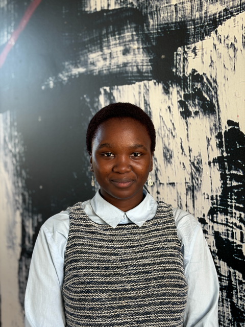

Who am I

I chose coding because I love diving into the unknown. I am curious to see where it will take me, and I want to learn along the way—every bug, every breakthrough, every late-night discovery.
"I want to go deeper, explore places that haven't been explored yet. Coding gives me the skills to go beyond and always let my creativity shine through."
For me, development is not just about writing functions or styling components. It is about exploration. Every project is a new territory on the map, every challenge is an invitation to grow, and every solution is a chance to build something meaningful.
I am currently training at Life Choices Academy (YouthCode Programme), where I am learning to build full-stack applications that are secure, responsive, and thoughtful. Beyond the code, I bring initiative, organization, and a collaborative mindset because great software is built by people who care about the craft and each other.